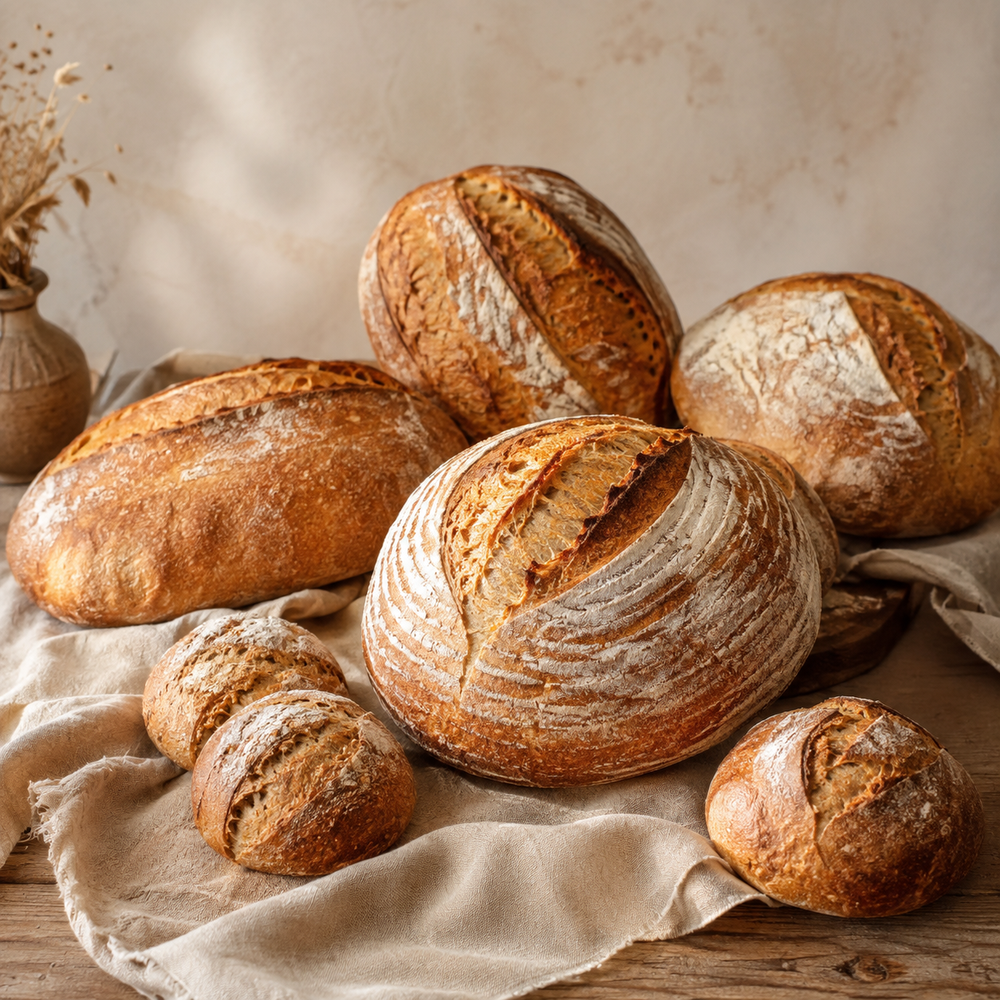
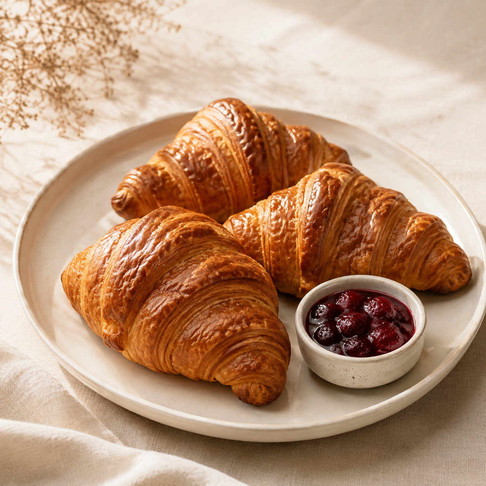
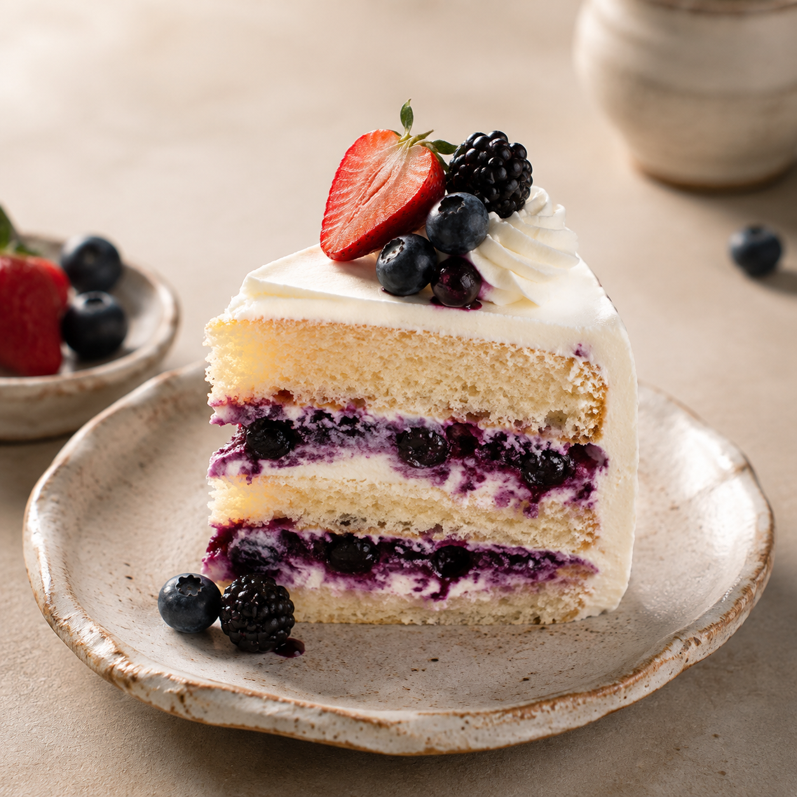
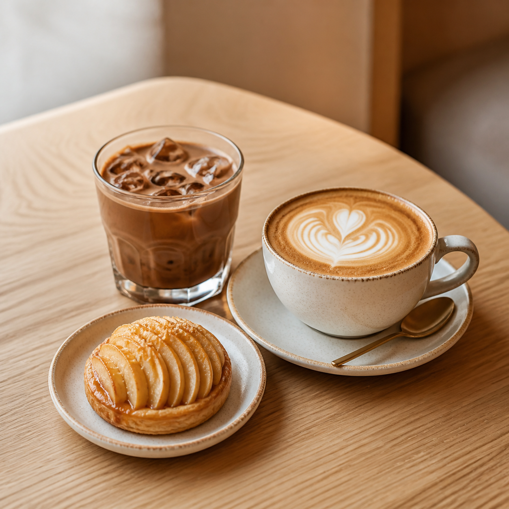

Panes de masa madre
Pan de campo, focaccia de romero y piezas con semillas; todos con fermentación lenta y corteza crujiente.
Conocer los panesÍtaca Bakery
Pan hechos con amor
PANADERÍA ARTESANAL
Horneamos en pequeños lotes panes de masa madre, croissants, pasteles y bebidas para que cada pedido llegue fresco, bonito y listo para compartir.
Explorar el menú
Mira las capas y el horneado que inspiran nuestros croissants y panes dulces.
Desde el primer pan de la mañana hasta un pastel para celebrar: conoce una pequeña muestra de lo que sale de nuestro horno.
Pan de campo, focaccia de romero y piezas con semillas; todos con fermentación lenta y corteza crujiente.
Conocer los panes
Clásicos, de almendra, chocolate y sabores de temporada con capas ligeras hechas una a una.
Elegir un croissant
Opciones de chocolate, vainilla con frutos rojos y pasteles por encargo para reuniones pequeñas.
Ver sabores de pastel
Ítaca es una panadería de preventa: preparamos solo lo necesario, cuidamos cada masa y horneamos con tiempo para que recibas piezas frescas.
Descubrir nuestra historiaPrimero eliges tus piezas favoritas, después confirmamos disponibilidad y finalmente acordamos la fecha de entrega o recolección.
Organizar mi pedido¿No sabes qué elegir? Cuéntanos para cuántas personas es tu pedido y te ayudamos a combinar panes, postres y bebidas.
Pedir una recomendaciónUN DETALLE PARA COMPARTIR
Podemos sugerirte una combinación de pan, croissants, postres y bebidas para una visita, un regalo o una mañana tranquila en casa.
Pasteles por encargo
Compártenos la fecha, el sabor que buscas y para cuántas personas será tu celebración.
Cajas para regalar
Podemos combinar panes, piezas dulces y bebidas para preparar un detalle listo para compartir.
Entrega local
Revisamos la ruta disponible en Roma Norte y alrededores al confirmar tu pedido.
Combina un croissant de mantequilla con café o chocolate para empezar la mañana.
El pan de campo y la focaccia son ideales para acompañar una mesa compartida.
Podemos sugerirte una caja con piezas dulces y pan para sorprender a alguien especial.
Para un pastel por encargo, cuéntanos la fecha y el número aproximado de personas.
Al confirmar disponibilidad, elegimos contigo la opción que mejor se ajuste a tu semana.